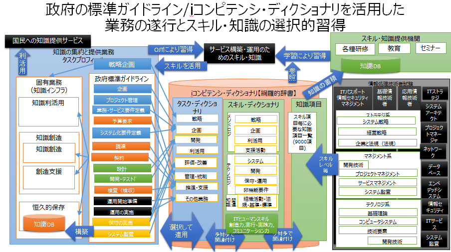
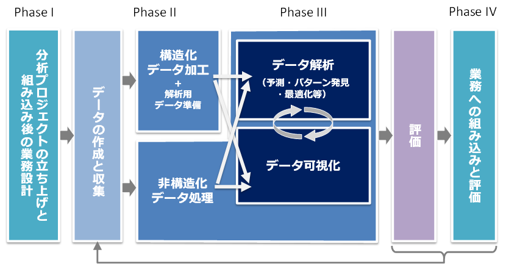

- Bib10-07 次世代図書館サービスの実現形でのタスクと必要なスキル・知識【詳細】
- 【2017年4月13日】
- 次世代の図書館サービスの業務と、業務に従事する人材の資質とスキルは？
- 人工知能と人間の能力と役割（一般論）
- 人工知能が果たす役割・機能
- 不足している労働力を補完する
- 既存の労働力を省力化する
- 既存の業務効率・生産性を高める
- 既存の業務の提供する価値（品質や顧客満足度など）を高める
- これまでに存在しなかった新しい価値をもった業務を創出する
- 既存の業務に取組む意欲や満足度を高める
- 新しい業務に取組む意欲や満足度を高める
- その他
- 人工知能（AI）の活用が一般化する時代における重要な能力
- 情報収集能力や課題解決能力、論理的思考などの業務遂行能力
- チャレンジ精神や主体性、行動力、洞察力などの人間的資質
- 企画発想力や創造性
- 語学力や理解力、表現力などの基礎的素養
- コミュニケーション能力やコーチングなどの対人関係能力

- （総務省「ICTの進化が雇用と働き方に及ぼす影響に関する調査研究」）
- ルーティンワーク、マニュアル化された仕事は、アルバイト、非常勤、外部委託、そして人工知能に置き換わる
- ビジネスプロセスにおける業務とシステムの役割分担の見直し
- AIの実用段階に達した今、今まで人が担ってきた部分の作業も、精密化すると一部が人工知能を活用したほうが効率的なことが多々ある
- 図書館員の役割と資質
- Librarian, cataloguers, reference librarian, Embedded librarian
- 人工知能により自動出力された内容の評価、補正。
- 選書
- 関連付けに必要な典拠類の構築
- 情報に関する基本情報付け（メタデータ付与）
- 情報に関する付加価値情報付け
- 情報間の関連付け
- 分類・主題情報の付与
- 人工知能を活用したレファレンス
- 集いの場（intellectual commons）の運営
- 研究グループの中に図書館的業務のできる人を置くことが必要。embedded librarian（研究協力図書館員）と呼ぶようになって来た。【長尾先生】
- 情報化推進部門

- l .ビジネスの旗振り役2 ディ－プラ一二ングの技術者、データサイ工ンテイスト3. モデルを組み込んだシステムを作る工ンジ二ア4. ビジネスと工ンジ二ア、データサイ工ンテイストの橋渡し役
- .ビジネスの旗振り役
- CIO
- CDO
- データサイエンティスト
- 技術
- ビジネス
- 分析
- コミュニケーション能力
- 主流のプログラミング言語でプロトタイプを開発でき、数学、統計学、確率論、コンピュータサイエンスの確かな素養のある人材
- かつ、ビジネス課題への感覚が鋭く顧客に共感できること
- ビジネスと工ンジ二ア、データサイ工ンテイストの橋渡し役
- 4の橋渡し役が既存の組織にはない、一方で重要な役割を果たす人。工ンジ二アと人工知能の技術を理解しながらビジネスとつないでいく人
- 図書館サービスの構築・運用に従事する人に必要な知識とスキルは？
- 一気に人工知能に置き換わらなくても、少なくとも職員から、アルバイト、非常勤、外部委託へとシフトしていくものが多い。その中で図書館職員としての仕事を見極める必要がある
- 一般的な情報化推進部門
- 網羅的なスキル構成
- メソドロジ
- ITビジネス活動の様々な局面で発揮される手法、方法などで、発揮される対象領域が広く、汎用性、応用性が高いスキルカテゴリ
- テクノロジ
- ITビジネス活動の様々な局面で発揮されるIT関連技法などで、対象領域が特定されるものが多いスキルカテゴリ
- 関連業務知識
- ITビジネス活動の様々な局面で活用される、メソドロジ、テクノロジ以外の関連業務知識。業務固有のスキル。
 ITヒューマンスキル
ITヒューマンスキル- 企業・組織が IT に関するタスクを実行する際に必要となるスキル。人工知能が実用化される状況において、人間として特に重要なスキル。
- 実行力・実践力
- 俯瞰力・深耕力・革新力・継続力
- 効果を上げるために、実行・実践環境や状況を適切に捉える力
- 効果的継続の実行と新しい取り組みや新領域へ挑戦する力
- 創造力
- 問題発見力・問題分析力・仮説設定力・論理思考力・概念化力
- 状況を認知して問題を発見し、見極め、解決案を策定する「価値の創造・問題解決」を着実に遂行する力
- 複雑な状況や問題に対して、論理的思考により概念の形成、判断の構築、命題設定を行う力
- コミュニケーション力
- 自分の考えを伝える力・相手の考え方を理解する力・共感を呼ぶ力
- 情報の獲得や更なる情報の要求や内容の確認、他者への情報提供、他者に影響を与えたり、協働への引導する力
- 一般的なシステム構築のタスク
- 戦略
- 事業戦略把握・策定支援
- 要求（構想）の確認
- 新ビジネスモデルへの提言
- 事業戦略の実現シナリオへの提言
- IT製品・サービス戦略策定
- 市場動向の調査・分析・予測
- IT製品・サービス戦略の策定
- 企画
- IT戦略策定・実行推進
- 基本方針の策定
- IT化計画の策定
- IT戦略実行マネジメント
- システム企画立案
- システム化構想の立案
- システム化計画の策定
- 業務・システム要件定義
- ITサービス要件定義
- 情報セキュリティ要件定義
- 開発
- システム要件定義・方式設計
- 運用設計
- 移行設計
- 基盤システム構築
- アプリケーションシステム開発
- ソフトウェア製品開発
- Webサイト開発
- システムテスト
- 移行・導入
- ソフトウェア保守
- ハードウェア・ソフトウェア製品導入
- ファシリティ設計・構築
- プロジェクトマネジメント
- 利活用
- サービスデスク
- IT運用コントロール
- システム運用管理
- Webサイト運用管理
- ファシリティ運用管理
- サービスマネジメント
- 評価・改善
- システム評価・改善
- IT戦略評価・改善
- IT製品・サービス戦略評価・改善
- 事業戦略評価・改善支援
- システム監査
- 資産管理・評価
- 管理・統制
- システム監査
- 資産管理・評価
- 事業継続マネジメント
- 情報セキュリティマネジメント
- 品質マネジメント
- 契約管理
- コンプライアンス
- 人的資源管理
- 推進・支援
- マーケティング・セールス
- 再利用
- 再利用資産管理
- 再利用資産管理の準備
- ソフトウェア開発プロセスの標準化手法
- ソフトウェアエンジニアリングの標準化手法
- 論理思考力
- 概念化力
- 自分の考えを伝える力
- 再利用資産の保管と管理
- ソフトウェア開発プロセスの標準化手法
- ソフトウェアエンジニアリングの標準化手法
- 論理思考力
- 継続力
- 共感を呼ぶ力
- 再利用施策管理
- 再利用施策の計画
- ソフトウェア開発プロセスの標準化手法
- ソフトウェアエンジニアリングの標準化手法
- 問題分析力
- 仮説設定力
- 概念化力
- 共感を呼ぶ力
- 再利用施策の実施
- ソフトウェア開発プロセスの標準化手法
- ソフトウェアエンジニアリングの標準化手法
- 問題分析力
- 仮説設定力
- 革新力
- 調達・委託
- 標準の策定・維持・管理
- 新ビジネス・新技術の調査・分析と技術支援
- 業務
- ビジネス目標の決定
- 状況の評価
- 目標の決定とプロジェクト計画の策定
- データの理解
- データマイニングのためのデータの準備
- モデリング
- モデリング手法の選択
- テスト設計
- モデルの構築
- モデルの評価
- 評価
- 結果とモデルの展開
- ビジネスでの活用と評価
- ビジネスでの活用
- ビジネス成果の確認
- 業務タスクとスキル・知識の蓄積のスキーム
- iコンピテンシ・ディクショナリを活用した業務の遂行とスキル・知識の選択的習得方法
- 
- 今後の図書館サービスの実現のためのタスクと必要なスキル
- 文化資源の収集・保存・修復・公開のスキル
- 図書館が扱う情報資産は、文献だけではない。
- 専門分野に関する知見（文化・芸術・学術）
- 文化資源を取り扱うための知識・技能
- 保存・修復技術
- 文化資源に価値を見出し、情報として記述するカタロガーとしての知識・技能
- 文化資源の価値を顕在化させて共有するための企画・発信するキュレーターとしての知識・技能
- 文化資源と人々をつなぎ、新たな価値を創出するコーディネータ、エンベデッドライブラリアンとしての知識・技能
- 文化資源を扱う活動の使命を明らかにし、その達成に向け経営資源を配分し、事業を統括するマネージャーとしての知識・技能
- デジタル技術を活用したアーカイブ化のための知見
- 文化資源を取り扱う様々な局面でITを活用し、文化資源をデジタル化し情報メディアに乗せていく技術を有する
- 著作権をはじめとする知的財産権、肖像権、契約など各種法律分野に関する知識を有する
- 文化資源を情報として収集・組織化・保存し、公開することを実現するシステムの開発・運用管理の知識・技能
- 効率的・効果的なシステム開発を行うシステムエンジニア
- 基礎となる学問分野の知識
- A：自然言語分野
- B：音声・音楽分野
- C：画像・映像分野
- D：コンピュータ・ソフトウェア、情報通信
- E：知識工学、人工知能
- F：図書館学、図書館情報学
- 詳細は別途
- 文化資源の保有機関にも、先進技術の研究開発および実用化を目指す研究者
- データサイエンス領域のスキル標準「ITSS+」の適用
- 位置付け
- iコンピテンシ・ディクショナリの補足として活用
- 従来のiコンピテンシ・ディクショナリでは、まだに辞書化が十分でない領域
 知識インフラの構築は、ビッグデータや人工知能の活用が必須であり、典型的なデータサイエンス領域として位置づけられる
知識インフラの構築は、ビッグデータや人工知能の活用が必須であり、典型的なデータサイエンス領域として位置づけられる
- データサイエンス領域
- ビッグデータや人工知能(AI)など、第4次産業革命に向けて必要性の高い領域のサービス・システムの構築・運用における専門分野を具体化
- IPAがこれまで公開してきたITSSには含まれていない新規の領域。一般社団法人データサイエンティスト協会との協業により策定。
- スキルカテゴリ
- ビジネス
- 課題背景を理解した上で、ビジネス課題を整理し、解決する。
- データサイエンス
- 情報処理、人工知能、統計学などの情報科学系の知恵を理解し、活用する。
- データエンジニアリング
- データサイエンスを意味のある形に使えるようにし、実装、運用する。
- タスク構造
- 
- タスク
- 分析プロジェクトの立ち上げと組み込み後の業務設計
- 前提条件の明確化
- 分析プロジェクト（データサイエンスを活用し、課題解決を行う一連の取組）のステークホルダーを明らかにする
- 分析プロジェクトの背景や問題意識を踏まえて目的とゴールを明らかにし、ステークホルダー間で共有する
- 目標の明確化
- 分析プロジェクトの目標を設定する
- 分析プロジェクトの目標と評価方法を具体化し、定量的な成功基準を設定するとともに、成功基準の判定時期・判定者を決定する
- 推進体制設計
- 分析プロジェクトの難易度に応じ、実施体制と役割分担を、メンバーの個々のデータ分析スキル、チームの総合的なバランスを考慮し、決定する
- 分析プロジェクトの実施計画を作成する
- 分析プロジェクトに必要なコストと分析プロジェクトの実施によって得られる利益（コスト削減効果を含む）を算出する
- 分析プロジェクトの実現性について評価・検討する
- 計画の承認
- 分析プロジェクトの実施計画について、ステークホルダーに説明し、必要に応じて調整を行って合意を形成する
- 分析プロジェクトの実施計画について、ステークホルダーの承認を得る
- 環境整備
- 分析プロジェクトに必要なハードウェア環境を設計・整備する
- 分析プロジェクトに必要な通信環境を設計・整備する
- 分析プロジェクトに必要なソフトウェア環境を設計・整備する
- 不必要な情報の漏れがないように暗号化を行い、防御態勢を解析開始前に整える
- 組み込み後の業務設計
- データ分析結果を利用・適用する対象業務のプロセス等を把握/設計する
- 取扱データ別にデータの利活用及び開示のガイドラインと管理・アクセス方法をステークホルダー間で設定する
- 対象業務の運用体制や運用方法を決定する
- 対象業務の目的や目標を確認し、モニタリング方針・方法やモニタリング時のKPIを決定する
- データの作成と収集
- データ分析設計
- データの収集方法、加工方法、分割・統合、蓄積・保存方法等の処理プロセスを決定する
- 対象業務に必要となるデータの種類と対象業務の目的に合ったデータ分析手法及びモデル要件（安定性・頑健性、監査性、保守性など）を検討する
- モデルの構築手法、評価手法（予測性能、判別性能、クラスタリング性能など）、検証方法（クロスバリデーションや、リサンプリングなどによる検証のためのデータ分割方法）を検討する
- データ収集
- 対象業務の目的を踏まえて利用・収集可能なデータとその収集方法（WEBデータの収集、システムからのデータの出力・加工、外部データの獲得・連携等）を決定する
- 検討したデータが現実的に利用・収集可能かどうかを確認・検証し、利用するデータを収集する
- 構造化データ加工
- データ加工
- 重複や欠損、外れ値、異常値など、除外または補正するべきデータのクレンジング方針を検討し実行する
- 分析目的に照らし、必要十分なサンプリングデータを実験計画法などを用いて作成する
- 分析目的に照らして、必要な閾値及び分布等を踏まえ、データを加工・整形する
- （例）データ結合、データ型変換、転置
- データ利用環境の構築
- 利用者向けのデータマート等の要件を把握する
- 利用者向けのデータマート等を設計・準備する
- 必要に応じて利用者向けのシステムやインタフェースを準備する
- 解析用データ準備
- 入力変数データと目的変数データの作成
- 目的変数、及びその必要性（教師なし学習など）を定義し、目的変数データと説明変数の元となる入力データを作成する（目的変数については、変数の内容だけではなく時点や期間も考慮する）
- データの準備
- モデルを構築するために十分なデータ（学習データ）と評価に必要なデータ（モデルを検証・チューニングするための検証データや、最終確認を行うためのテストデータなど）に分割するとともに、モデリング手法に応じ必要なデータの加工を行う（数値の正規化、データのシャッフルなど）
- データ解析
- データ集計、抽出
- データ集計・抽出の設計をする（検索条件・抽出条件・集計関数などを決定する）
- データ集計・抽出を行う
- 性質・関係性の把握
- 収集したデータの基礎統計量（平均値、中央値、最頻値、標準偏差、分散など）を確認し、全体のバラツキや傾向、異常値などを把握する
- 収集したデータを異なるレイヤで集計し、データが本来持つべき意味や活動目的の視点から違和感がないかどうかを見極める
- 収集したデータに対する基本的な分析（クロス集計、可視化など）を実施し、基本的な２変数間の関係性や傾向を把握する
- 収集した３次元以上の多変量データに対する分析（平行座標プロット、ネットワーク分析等）を実施し、多変量におけるデータ間の関係性や傾向を把握する
- データ間にどのような関係性（例：因果関係、ボトルネックなど）があるかを事前検討し、検証方法（手法例：主成分分析、因子分析など、定義例：距離定義など）を決め、関係性の有無を検証する
- 検定
- 医薬品開発などにおいて、母集団の平均の推定、２群や多群間の平均値の差などの有意差を検定する（ｔ検定、クラスカル・ウォリス検定など）
- 品質管理などにおいて、サンプリングを行い、抽出されたサンプルから不良率などの検定を行い、評価する
- A/Bテストの実施により得られた結果に対し、標本数が少ない場合、検定を行い有意差を判断する（カイ二乗検定など）
- 予測・判別
- 分析目的や選択するモデル手法の観点から、必要となる説明変数データや特徴値を作成する（手法例：ｐ値による選択、正則化による除外・抑制、機械学習による自動作成など）
- （数値予測）売上予測、価格予測、発生確率予測など数値の予測モデルを構築する（手法例：重回帰分析、ロジスティック回帰、ニューラルネットワークなど）
- （２値の判別・予測）与信可否判断や迷惑メール判別、顧客離脱など、二つの状態に対する判別・予測モデルを構築する（手法例：ロジスティック回帰、サポートベクターマシン（SVM）など）
- （クラスの判別・予測）新規顧客のセグメントや将来の顧客行動パターンなど、新たに発生するデータを分類するための判別・予測モデルを構築する（手法例：決定木、ニューラルネットワークなど）
- （時系列予測）株価や景気変動など、過去の時系列データに基づく将来の推移・変動予測モデルを構築する（手法例：自己回帰モデル、移動平均モデル、ARIMA、SARIMAなど）
- グルーピング
- 顧客のターゲティング/セグメンテーションや、データ傾向の把握を行うため、着目する類似度、距離を定義し、対象をいくつかのグループに分類する（必要に応じて、分析の目的と評価指標に従って適切なクラスタやグループ数を決定する）（手法例：階層クラスター分析、非階層クラスター分析（k-means等）、自己組織化マップ（SOM）など）
- 故障検知、不正検知などを目的として、データ全体の傾向から著しく離れた対象（外れ値）や、既知のデータとは振る舞いが異なる異常パターンを早期検知/検出する（手法例：k近傍法、One-class SVM、反復子ニューラルネットワーク、及び検定、統計モデル、クラスター分析に基づく手法など）
- パターン発見
- ヒトの行動データや製品のログデータなどにおいて頻出するパターンを抽出する（手法例：アプリオリアルゴリズムなど）
- 行動データや意識調査データから、コンテキストや意図/ニーズを把握する（手法例：主成分分析や因子分析など）
- バイタルデータや行動データから、個体特有のパターンを学習し、個人を識別する（手法例：ニューラルネットワークなど）
- 行動や嗜好の類似性/共起性を抽出し、レコメンデーションルールを作成する（手法例：協調フィルタリングなど）
- 最適化
- 最適化問題（金融ポートフォリオ、生産計画、勤務シフト、貨物積載量、広告配信量など）において、対象の条件や制約を定義する
- 定義した条件を元に変数、目的関数、制約を定式化する
- 目的に適したアルゴリズム・解法を選択し、モデリングし、最適化する（手法例：線形計画法、非線形計画法、組み合わせ最適化など）
- シミュレーション
- 企業収益や交通量などの予測において、現実のデータ分布を観察し、シミュレーションの前提となるモデル式、確率分布、初期値、境界条件を定義する
- モンテカルロ法、エージェントベースモデルなどの技法から適切な手法を選択し、モデル式やパラメータを設定しシミュレーションを実行する
- データ可視化
- 可視化の企画とデータ収集
- 可視化の目的、メッセージを明確にする
- 目的・メッセージに沿った、分析の比較軸候補を洗い出す
- 必要なデータ、その取得項目・形式・精度を決める
- データ入手・転送・蓄積方法を設計・実行する
- 2軸チャート化
- 一般的な２軸チャート化においてチャート種、軸、値のきざみを決める
- 多次元の可視化
- 多次元の可視化（平行座標、散布図行列など）において、同時に表現する属性数を調整する
- 関係性の可視化
- 統計的な関係性の可視化（ネットワーク構造、グラフ構造、階層構造など）において、ノード、エッジ、クラスター数等を特徴把握できる規模に調整する
- 地図上の可視化
- 平面地図上に重ね合わせた可視化（GPSデータなど）において、位置情報への各種データを重ね合わせや、必要に応じた地図の地域分割を行う
- 挙動・軌跡の可視化
- 挙動・軌跡の可視化（Eye trackingなど）において、下地となる図に合わせて座標データを定義する
- 見たいデータ粒度の挙動・軌跡となるようサンプリングやアンサンブル平均によってデータ量を減らす
- ダイナミックな可視化
- 必要な時間分解能で表現できるように特異点の抽出や次元圧縮を通じてデータを圧縮する
- リアルタイム可視化
- 必要なリアルタイム性に応じてデータの分割転送、復元をコーディングする
- 非構造化データ処理
- 方針検討
- 目的を踏まえ、非構造化データの処理方針を検討する（言語：ポジネガ分析など、画像：画像認識など、音：本人認証など）
- 言語処理
- （データ収集）Webクローリング、DBアクセス、アンケート、文字認識、音声認識などの結果からテキストデータを収集し、HTMLタグ等の不要な表現を除去して分析しやすいように整備する
- （辞書構築）当該分野の専門用語や、同義語、類義語、対義語、人名・地名の辞書を、クラウドソーシングによる多数のユーザへのアンケートで収集したり、ブートストラップ法による事例の半自動生成手法を用いて構築する
- （構造解析）構築した辞書を活用してパラメータ調整を行った形態素解析器、構文解析器、固有表現抽出器などを用いてテキストデータの構造解析を行う
- （特徴量変換）低頻度語やストップワードの除去、名詞や動詞の正規化などを行い、テキストデータを単語集合（Bag-of-words）、分散表現などの分析しやすい特徴量に変換する
- （教師あり分析）人手もしくは半自動で正解ラベルを収集したのち、SVMなどの教師あり分類学習を行い、文書のジャンルや感情の判定、単語の品詞やカテゴリの推定を行う
- （教師なし分析）トピックモデル（Latent Dirichlet Allocation/LDA）などの統計モデルを用いて、文書をクラスタリングして類似文書にまとめたり、文書中の代表的なトピックの推定を行う
- （情報検索）転置インデックスのような索引構造や潜在意味インデクシング（LSI）のような次元圧縮手法を用いて文書の厳密・類似検索を高速に行う
- （文書生成）Nグラム統計モデルや再起ニューラルネットワーク（RNN）などを用いて、翻訳、要約、対話、Q&Aなどの出力テキストを生成する
- 画像処理
- 画像データに付随するメタデータ（何の画像か、撮影条件、関心領域（Region of Interest ）等）を紐付ける
- 画像データを生成したセンサー特性にあった補正・修正を行う
- 分析しやすいデータフォーマット（チャンネルの設定、画素値の正規化・レベル変換、サイズ等）に変換する
- （類似画像推定）画像間の類似度を定義する順序や距離、画像特徴量を与える手法を決定するとともに、類似画像を列挙するための特徴量を適切に保存・検索する手法も同時に検討する
- （画像認識）画像のメタデータから認識対象のラベルデータを抽出し、画像特徴量を与える手法、ラベルデータを対応付ける手法を決定する
- （画像復元）復元精度を測る指標を選び、指標を最適化するような復元手法を決定する
- 音声/音楽処理
- 音をデジタルデータとして、wav や mp3 などにフォーマットする
- 音データからノイズ、雑音などの余計な音を識別して除去する
- 分析目的にあったデータ（音高、音量など）を抽出する
- （本人認証や話者識別）音声データから抽出したスペクトラムやメル周波数ケプストラム係数（MFCC）などの特徴量を用いて、本人認証や話者識別のためのパラメータの推定・モデル構築・精度評価を行う
- （感情分析）音声データから抽出した周波数や音量変化量などの特徴量を用いて、感情を識別するパラメータの推定・モデル構築・精度評価を行う
- （テキスト化）音声データから抽出した周波数を用いて音響モデルを構築し、さらに音声データから書き起こしたテキストから言語モデルを構築し、テキスト識別するためのパラメータの推定・モデル構築・精度評価を行う
- （音楽分析）音楽データから、周波数やMFCC、さらにテンポやコード進行などの特徴量を抽出し、ジャンルやアーティストなどを識別するパラメータ推定・モデル構築・精度評価を行う
- 評価
- モデル評価
- （性能評価・確認）データ分析設計により定めた評価手法によりモデル評価を行う（モデルパフォーマンスに対する目標水準が設定可能な場合においては、その水準を満たしているか評価する）
- （性能検証）データ分析設計にて定めた検証手法により、モデルパフォーマンスの検証を行い、必要に応じて説明変数やパラメータのチューニングを行う（データ解析タスクの再実施）
- （モデル理解）モデルの構造から入力と出力の関係性を理解する（各説明変数の寄与度確認や、モデル式に対する業務的解釈など）
- （モデル選定）候補モデルに対する最終なパフォーマンス確認を行い、業務要件やモデル要件も考慮の上、最終モデルを選定する
- 分析評価
- （仮説の検証）事前に打ち立てた関係性や法則などの仮説と分析結果を照らし合わせ、活動目的に対する有効性の観点から、その妥当性を判断する
- （仮説の探索）データ分析結果から得られた関係性や法則などの仮説を確認し、またその仮説は活動目的に有効なものか判断する
- 業務への組み込みと評価
- 業務への組み込み
- 分析結果を業務で活用するためのソリューション開発を行う（小規模な表計算ソフトでのツール開発や大規模ビッグデータシステムへの組み込みなど）
- 組み込み結果の評価
- 予め検討したKPIに基づき、データ分析結果を活用する業務が当初の想定通りに実施されているかどうかをモニタリングする
- 当初の目的と照らして、データ分析結果を活用する業務の成果を評価する
- 業務の成果を踏まえて、必要に応じてデータ処理方法や分析方法等について再検討を行う
- データ分析結果活用による業務改善
- データ分析結果を活用して、業務上の問題点や課題を明らかにする
- 明らかになった業務上の問題点や課題に対する対応策を検討する
- 検討された対応策について、業務への反映と改善を図る
- ビジネス上の効果の把握とさらなる改善
- データ分析結果の利用による業務上の成果を必要なステークホルダーに報告・フィードバックする
- ステークホルダーからの意見や要望を収集し、さらなる改善に活かす